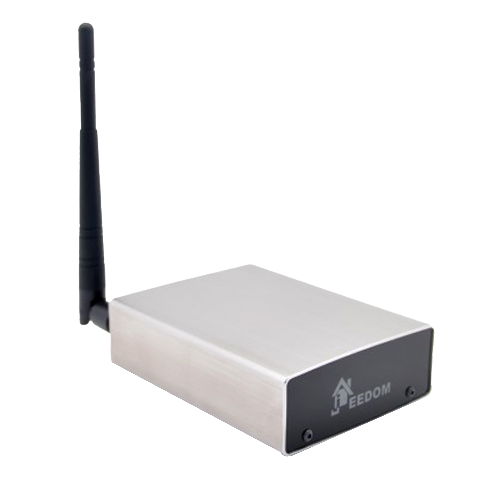
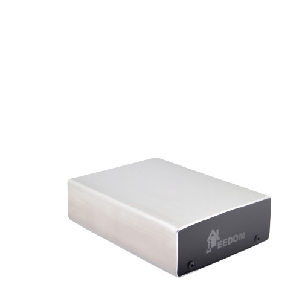
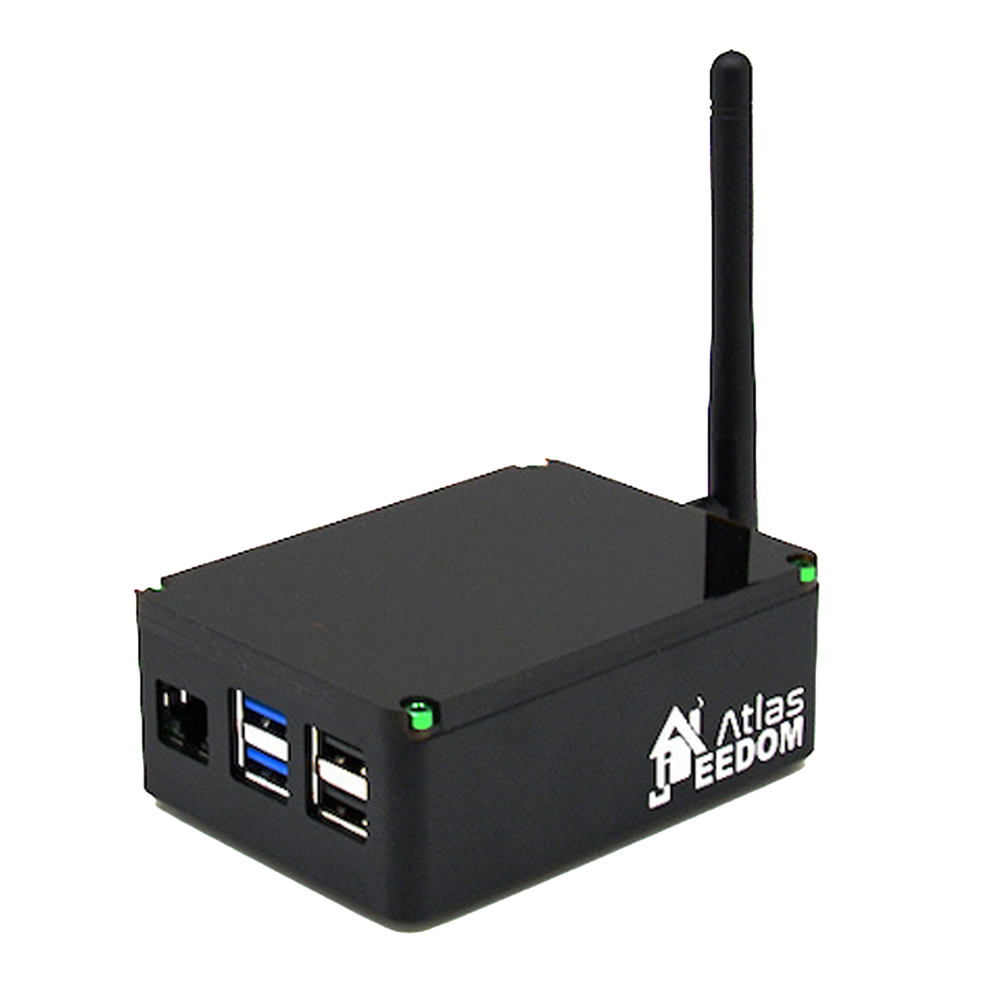
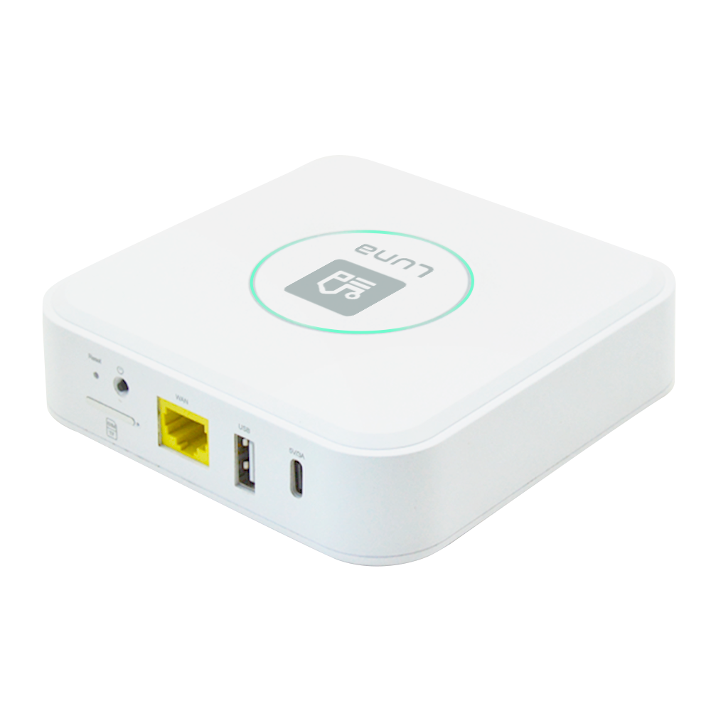

1 - Comprendre Jeedom en 2 minutes
Jeedom est un logiciel de domotique installé localement sur votre box (ou mini-PC, NAS, etc.).
Il fonctionne même sans Internet, mais a besoin d'un réseau local.
Vous gérez votre maison via une interface web (ordinateur, mobile, tablette).
Les plugins ajoutent des fonctionnalités (compatibilité avec équipements, scénarios, etc.).
2 - Les sauvegardes (backups)
Jeedom fait automatiquement une sauvegarde quotidienne (paramétrable).
Vous pouvez télécharger une sauvegarde depuis l'interface.
En cas de panne ou migration, il suffit de restaurer cette sauvegarde pour tout retrouver.
Conseil : stockez une copie hors de la box (cloud, PC, NAS…).
3 - Les plugins
Tout passe par les plugins : ils connectent vos équipements et ajoutent des fonctions.
Certains sont officiels (testés par Jeedom SAS), d'autres sont communautaires.
Les plugins sont installables depuis le Market Jeedom directement dans l'interface.
Certains nécessitent un service Jeedom Market (gratuit) ou un service pack.
4 - Le Market Jeedom
Le Market Jeedom est la plateforme centrale pour étendre les fonctionnalités de votre installation :
- Téléchargement de plugins officiels et tiers
Un compte Market gratuit est requis pour accéder aux plugins gratuits.
Les Service Packs apportent du support et l'accès à certains plugins.
5 - Les mises à jour
Jeedom, ses plugins et son système ont des mises à jour régulières.
Toujours faire une sauvegarde avant de mettre à jour.
Les changelogs sont visibles avant installation.
En cas de souci, une restauration revient à l'état précédent.
6 - L'accès à distance
Pour accéder à Jeedom depuis l'extérieur, il existe plusieurs solutions :
- Service DNS Jeedom (simple et sécurisé, inclus avec certains packs)
- Configuration manuelle via votre box Internet
L'accès à distance n'est pas obligatoire pour le fonctionnement local.
7 - Les scénarios et automatisations
Les scénarios permettent d'automatiser votre maison (ex. : allumer la lumière si mouvement).
Ils se construisent avec une interface visuelle (blocs "si / alors / sinon").
C'est une des forces de Jeedom : vous décidez de tout.
8 - Sécurité & bonnes pratiques
Voici quelques conseils pour éviter les erreurs les plus courantes :
- Changez le mot de passe par défaut
- N'ouvrez pas n'importe quel port sans comprendre pourquoi
- Faites vos sauvegardes et gardez-les ailleurs
- Ne téléchargez des plugins que depuis le Market officiel
9 - Communauté et support
Le forum communautaire est très actif et constitue une ressource précieuse pour les utilisateurs.
Il existe une documentation officielle complète avec de nombreux tutoriels.
Les tutoriels vidéos et guides pas-à-pas sont disponibles sur le site Jeedom.
Si vous avez un service pack, vous avez accès au support officiel.
10 - À retenir
- Sauvegardez.
- Mettez à jour régulièrement.
- Installez les plugins nécessaires, pas tous.
- Rejoignez la communauté.
- Testez, apprenez, amusez-vous !
Choisissez votre Box
Jeedom
Smart Z-Wave

Jeedom
Smart

Jeedom
Atlas

Jeedom
Luna
